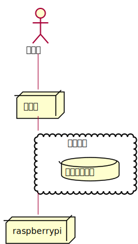
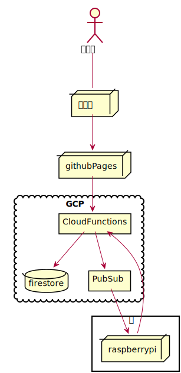
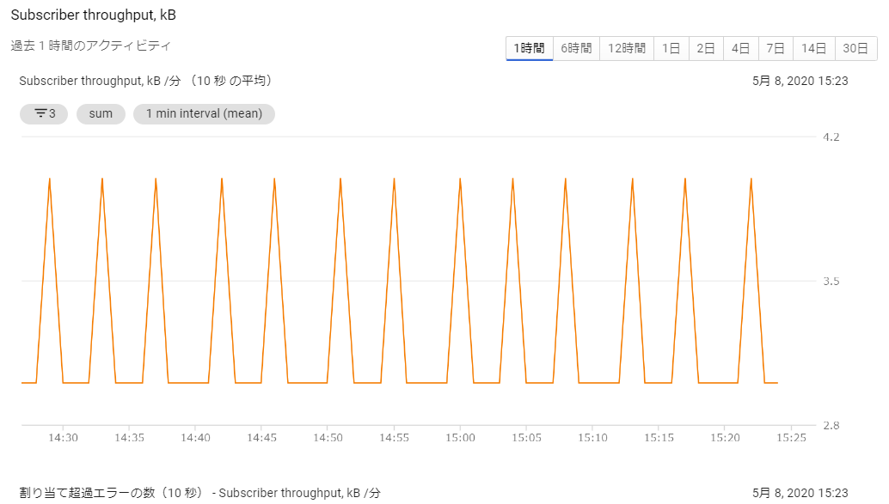

Google Cloud Platform を使ってみる
新型コロナによる非常事態宣言を受け、休業になったのを機に、 これまで避けてきたクラウドサービスを使ってみることにした。
これは、その備忘録である。
なお、作業中にハマった箇所をトラブルシュートとして載せているので、参考にして欲しい。
ゴールイメージ
ここでは、クラウドサービスを使って、次の機能の実現を目指す。
「クラウドサービス上の Web インターフェースから、家にある raspberry pi を操作する」
言い換えれば、「家にある raspberry pi を外から操作する」ことを目標とする。
「ルータの DMZ やポートフォワードを利用すれば、クラウドサービスを使う必要がない」 という話もあるが、 その場合 raspberry pi のセキュリティが気になるし、 なによりクラウドサービスの勉強にならない。
そんな訳で、今回のシステムは次のような感じにする。

actor ユーザ
node スマホ
cloud クラウド{
database データベース
}
node raspberrypi
ユーザ -- スマホ
スマホ -- クラウド
クラウド -- raspberrypiサービスプロバイダーの選択
クラウドサービスと言えば、次の 3 つが代表に挙げられるだろう。
-
AWS
-
Azure
-
GCP (and firebase)
お試しなので、無料で出来るものをピックアップした結果、 次の URL の内容を元に GCP を選択した。
-
【AWS, GCP, Azure, OracleCloud, Firebase】無料で使えるクラウドのサーバリソースまとめ【2020年1月版】
GCP のアカウント作成
そんな訳で GCP を利用するために、まずは以下の URL からアカウントの登録を行なう。
<https://cloud.google.com/?hl=ja>
このアカウント登録には、個人情報やクレジット番号の入力が必要になる。 入力が必要な個人情報には、名前は当然として、住所も入力するのだが、 恐しいことに郵便番号の入力欄が自動的に入力された。
今回 GCP の登録に利用した gmail アカウントには、 個人情報を登録した覚えはない。 なのに、何故か Google にはこちらの郵便番号が分かるらしい。
ちなみに、2段階認証で Android スマホを利用しているが、 そのスマホの位置情報機能も原則 Off にしている。
それにもかかわらず、郵便番号が判ってしまうというのは、本当に恐しい限りだ。
ネットワークの通信遅延から大まかな場所を特定可能というが、 郵便番号レベルで判ってしまうというのは、 位置情報が半径数百メートル精度で把握されているということであり、 もはや恐怖でしかない。
まさに、Google にはプライバシーが筒抜けといっていいだろう。
Google Clund の無料枠
そんな訳で、 Google の恐しさを感じてモチベーションが下りつつも、話を進める。
出来るだけ無駄なお金はかけくないので、無料枠をチェックする。 Google Cloud の無料枠の説明は以下にある。
<https://cloud.google.com/free/docs/gcp-free-tier?hl=ja >
ちなみに、ここはアカウント登録前にも確認できるので、 サービスをじっくり比較検討したいという人は参考に。
無料枠の終了条件は以下のいずれか早い方。
-
登録後 12 ヶ月が経過した場合。
-
登録時に支給される $300 相当のクレジットを使い切った場合。
自分の検討内容的に考えて、 $300 相当を使い切ることは無いだろう。 もちろん「意図せず何かを暴走させる」なんてことが無いことが前提だが。
無料枠終了後
もしも $300 を使い切った場合や、12 ヶ月を経過した場合でも、 「いつの間にかクレジットカードに多額の請求が来る」なんてことはないらしい。
無料枠が終了した場合、それまで作成したサービスが全て一旦停止される。 そのサービスを継続して利用したい場合は、 無料アカウントから有償アカウントにアップグレードする必要があり、 アップグレード後に発生した料金がクレジットカードに請求される仕組みらしい。
ただし、アップグレードでサービスが復旧されるのは、 無料枠が終了してから 30 日以内にアップグレードした場合に限り、 30 日を過ぎた場合はサービスが削除されるので注意が必要。
そんな訳で、 GCP を勉強するだけなら、お金の心配は不要。
ただし、それと引き換えに個人情報を Google に持っていかれるということを、 十分留意する必要がある。
前々から気付いていたことだが、 もう Google には逆らえないな。。。
なんていうか、中国人が中国政府に個人情報だだ漏れで生活しているように、 全世界の人口の大部分は Google に対して個人情報だだ漏れで 付き合っていく必要があるだろう。
Google Cloud Functions
自分のような Web 素人、かつ、お手軽にクラウドサービスを試したいという場合、 サーバレスの FaaS が一番良いだろう、ということで、 Google Cloud Functions から初める。
Google Cloud Functions の公式ドキュメントはこちら。
<https://cloud.google.com/functions/docs?hl=ja>
公式の入門日本語ドキュメントがあるというのは本当に素晴しい。
「いかかでしたか？」系の Web ドキュメントに頼ることなく、 安心して作業を進められる。 それだけ、誰でも使えるレベルの当たり前の技術になっている、ということなんだろう。 これは、周回遅れで勉強を初めることの数少ないメリットの一つと言って良い。
そんな訳で上記公式ドキュメントを、一からやってみる。
クイックスタート
Google Cloud Functions のクイックスタートには Node.js/Python/Go のチュートリアルがあるが、 今は Go の勉強中なので Go を選択する。
多分、 Web のバックエンド技術としては Node.js が一番メジャーだと思うが、 今は Go を優先させたい気分なので。
デプロイ
ドキュメントに従ってデプロイするが、デプロイは 1、2 分程度掛った。
デプロイに成功すると、 所定の URL にアクセスすることで登録した関数が実行できるようになる。
GCP のサンプルでは、認証不要で誰でもアクセス可能なサービスとして登録される。 もちろん URL が分からなければアクセスは出来ない。 サンプルだから認証不要で問題ないと思うが、勉強後はサービスを削除するか、認証ありにしておくべきだろう。
トラブルシュート
-
デプロイに失敗する
-
ビルドエラーしている
-
デプロイする前に
go build XXXX.goを実行してビルドエラーがないか調べる
-
-
ハンドラ関数の名前が、小文字で始まっている
-
ハンドラ関数は、大文字で始める必要がある
-
-
ハンドラ関数名と deploy で指定している名前が異なる
-
サービス開発環境について
デプロイの処理時間が想像以上に(分単位)掛るので、 動作確認で何回もデプロイすると効率がめちゃ悪くなる。
そんな訳で、デプロイする前にサービスを動作確認できる環境をローカルに作成する。
環境作成手順
ローカルに開発環境を整える場合、公式ドキュメントとは手順が一部異なるが、 ここの手順通りにやって欲しい。 そうしないと、後半に書いてある PubSub が動かなくて困ることになるだろう。
-
どこか適当なディレクトリを環境変数 GOPATH に設定する
export GOPATH=/home/hoge/work/gcp
-
環境変数 GO111MODULE に auto を設定する
export GO111MODULE=auto
-
$GOPATH/src 以下 に適当なディレクトリ Test を作成。
-
Test ディレクトリに gcp にデプロイするソースのあるディレクトリ YYYYYYYY へのシンボリックリンクを作成する
-
Test ディレクトリに、次のようなソース main.go を作成する。
package main
import (
"net/http"
"Test/YYYYYYYY"
)
func main() {
http.HandleFunc( "/XXXXXXXXX/", srrec.Access)
http.Handle(
"/content/",
http.StripPrefix(
"/content/", http.FileServer(http.Dir( "./content" ))))
http.ListenAndServe(":28080", nil)
}-
ここで XXXXXXXXX は、YYYYYYYY で定義しているハンドラ関数名
-
ここで Test/YYYYYYYY は、 GOPATH からの相対パス
-
まとめると、次のようなディレクトリ構成になる。
--- $GOPATH/src/Test
+--- main.go
+--- context // テスト用コンテンツ置き場
+--- index.html
+--- YYYYYYYY // (シンボリックリンク)
+--- ZZZZZZZ.go // XXXXXXXXX 関数を定義するソース-
次のコマンドを実行
$ go run main.go
これで、簡易的な HTTPD サービスがローカルで動くので、次のコマンドで動作を確認できる。
curl http://localhost:28080/XXXXXXXXX curl http://localhost:28080/content/index.html
上記手順で特に重要なモノを挙げると
-
環境変数 GOPATH, GO111MODULE の設定
-
$GOPATH/src/ 以下にプロジェクトを作成
-
Cloud Functions パッケージの import は、 GOPATH からの相対パスを指定
なお、 Test ディレクトリでは go mod 系のコマンドは実行しない。
Firestore
Cloud Functions は、入力を受けて出力を行なうフィルターのようなもので、 Cloud Functions 単体ではデータを保持できない。 データを保持する方法として、Firestore がサンプルとして挙げられている。
なお、Firestore には次の 2 つのモードがある。
-
ネイティブモード
-
Datastore モード
Cloud Functions からアクセスする場合、ネイティブモードを選択する。
Firestore のデータ型
Firestore は、いわゆる NoSQL タイプのデータベース。
Firestore で扱えるデータの型は次の URL を参照すること。
<https://firebase.google.com/docs/firestore/manage-data/data-types?hl=ja>
ちなみに、 整数型は int64 固定 になる。
これが分からずに暫く悩んでしまった。
JSON
REST API には必須の JSON。 今回は Go でコードを組むので、 Go で JSON を扱う必要がある。
JSON と静的型付け言語は、 JSON ⇔ データの変換が面倒なことが多い。 Go では JSON のデータの取扱がどうなっているか調べてみたが、 静的型付け言語としては、だいぶ簡単に扱えるようになっている。
Go の文字列→構造体変換
構造体宣言
{
"Val1": 1,
"Val2": "abc"
}簡単な例として、上記の JSON 文字列を、次の構造体に変換する処理を考える。
type Hoge struct {
Val1 int
Val2 string
}変換サンプル
次の処理で、 JSON → 構造体変換が出来る。
package main
import "strings"
import "fmt"
import "encoding/json"
type Hoge struct {
Val1 int
Val2 string
}
func main() {
reader := strings.NewReader( `{ "Val1": 1, "Val2": "abc" }` )
var item Hoge
if err := json.NewDecoder( reader ).Decode( &item ); err != nil {
fmt.Printf( "error: %v\n", err ) // 失敗
} else {
fmt.Printf( "decode: %v\n", item ) // 成功
}
}
上記の通り json.NewDecoder( reader ).Decode( &item ) だけで、
文字列から構造体に変換できる。
ただし、これだけで処理が済むには、 JSON オブジェクトのメンバ名が次の条件を満している必要がある。
-
Go の構造体のメンバ名と一致している
-
JSON オブジェクトのメンバ名の頭文字が大文字で始まっている
上記の条件で、少し厄介なのが 2 つ目の条件だろう。 例えば、次のようにメンバ名が小文字で始まっている場合、
{
"val1": 1,
"val2": "abc"
}次のように Go の構造体を宣言しても、 JSON 文字列→構造体変換が正常に動作しない。
type Hoge struct {
val1 int
val2 string
}なぜなら、 Go の構造体のメンバは 大文字から始まらないと、外部パッケージからアクセス出来ない という Go の仕様があるためだ。
では、このような JSON を扱うにはどうすれば良いかというと、 Go の構造体宣言を次のようにすることで対応できる。
type Hoge struct {
Val1 int `json:"val1"`
Val2 string `json:"val2"`
}この `json:"XXXX"` を宣言することで、 そのメンバと JSON オブジェクトのメンバ名との紐付けを指定することができる。 なお、 `json:"XXXX"` は大文字小文字の違いだけでなく、 全く名前の異なるものでも紐付けできる。
トラブルシュート
-
Decode() がエラーする
-
JSON 文字列に、JSON フォーマット上のエラーがある
-
-
JSON の Decode はエラーを返さないのに、構造体のメンバーがセットされない
-
メンバ名が小文字で始まっている
-
`json:"XXXX"` の指定が間違っている
-
Go の構造体 → JSON 文字列変換
前述した構造体から文字列に変換する場合、次のような処理を行なう。
func struct2json( item *Hoge ) {
jsonBytes, _ := json.Marshal( item )
fmt.Printf( "items: %v", string(jsonBytes))
}大文字でない構造体のメンバは、 JSON 文字列に出力されない。
システムのデータの流れ
-
スマホから Cloud Functions にアクセスし、 Raspberry pi への操作を要求する。
-
この時、Cloud Functions は操作要求情報を firestore に記録する
-
-
Raspberry pi は、Cloud Functions にアクセスし、 操作要求情報を取得して処理する。
-
この時、Cloud Functions は操作要求情報を firestore から読み出す
-
-
この構成の場合、Raspberry pi は、クラウド側に操作要求情報がないか 定期的にポーリングする必要がある。
-
一般的に、ポーリングはサーバ負荷がかかる。
-
とはいえ、1台の Raspberry pi からポーリングしたところで、 サーバ負荷を考えるレベルにはない。
-
また、常識レベルのポーリング間隔であれば、GCP の 1 ヶ月間の無料枠をオーバーすることもない。
-
よって、 ポーリングでも実質的な問題はない。
-
しかし、 ポーリングはかっこ悪い し、折角の勉強の機会なので、別の手段を考える。
-
PubSub
PubSub は、一対多のメッセージングシステムを提供するサービスである。 これを利用することで、定期的な ポーリングが不要 になる。
ちなみに、 PubSub は Publisher と Subscriber を示しており、 Publisher 側でメッセージを通知し、 Subscriber 側でメッセージを受けとる形になる。
今回のシステムでは Cloud Functions 側が Publisher で、 Raspberry Pi 側が Subscriber になる。 Cloud Functions は、操作要求情報をデータベースに記録したタイミングで Publish し、 Raspberry Pi 側はメッセージを受信したタイミングで操作要求情報を取得し、 その要求を処理することで、定期的なポーリングが不要になる。 通知するメッセージに、操作要求情報を直接含めても良いが、今回は更新通知だけを送り、 操作要求情報は別途取得する構成にする。
Python による PubSub アクセスのトラブルシュート
-
Python で PubSub にアクセスすると、 "403 User not authorized to perform this action." が表示される
-
環境変数 GOOGLE_APPLICATION_CREDENTIALS の指定が間違っている
-
GOOGLE_APPLICATION_CREDENTIALS には、ユーザ認証のキー情報 JSON ファイルのパスを指定する。
-
-
環境変数 GOOGLE_APPLICATION_CREDENTIALS で指定しているユーザのロールが間違っている
-
ユーザのロールは、GCP Console の IAM から設定するのではなく、 PubSub のトピック、サブスクリプションのそれぞれの権限メニューからユーザにロールを設定する。
-
権限の表示領域上部の「継承された権限を表示」が On になっている場合、Off にする。 「継承された権限を表示」を Off にした状態で、 Pub/Sub のトピック、サブスクリプションの パブリッシャー、サブスクライバーにメンバーが割り当てられていることを確認する。
-
-
-
Cloud Functions の Go から Publish
GCP の入門ドキュメントでは、 Python で PubSub にアクセスしていたが、 今回のシステムの Cloud Functions では Go を選択しているので、 Go から PubSub にアクセスする。
Go の PubSub API リファレンスは次を参照する。
<https://godoc.org/cloud.google.com/go/pubsub>
メッセージをトピック my-topic に publish する処理は次のようになる。
import "cloud.google.com/go/pubsub"
func Publish( w http.ResponseWriter, r *http.Request ) {
ctx := context.Background()
var client *pubsub.Client
var err error
client, err = pubsub.NewClient( ctx, projID )
if err != nil {
fmt.Fprintf(w, "error NewClient: %v\n", err )
}
topic := client.Topic( "my-topic")
if topic == nil {
fmt.Fprintf( w, "error Publish -- not found topic\n" )
return;
}
res := topic.Publish(ctx, &pubsub.Message{Data: []byte("payload")})
if _, err := res.Get( ctx ); err != nil {
fmt.Fprintf( w, "error Publish: %v\n", err )
}
}Go による PubSub アクセスのトラブルシュート
-
ビルドエラーする
-
package XXXXX is not in GOROOT エラー
-
環境変数 GO111MODULE が on になっている。
-
auto に設定する。
-
-
-
unexpected directory layout エラー
-
独自パッケージのインポートパス指定が間違っている。
-
GOPATH からの相対パスを指定する
-
-
-
cannot find package エラー
-
上記の併せ技の状況になっている。
-
-
構成まとめ
今回の GCP 構成をまとめた図を示す。
-
HTML 等の静的コンテンツは github Pages でホスティングする
-
javascript から GCP Cloud Functions にアクセスする
-
GCP Cloud Functions から、 firestore, Pub/Sub にアクセスする
-
raspberrypi から、 Pub/Sub に Subscriber としてアクセスする

actor ユーザ
node スマホ
node githubPages
cloud GCP{
database firestore
rectangle CloudFunctions
rectangle PubSub
}
rectangle 家 {
node raspberrypi
}
ユーザ -- スマホ
スマホ --> githubPages
githubPages --> CloudFunctions
CloudFunctions --> firestore
CloudFunctions --> PubSub
PubSub --> raspberrypi
CloudFunctions <-- raspberrypi料金
今回の構成は、無料期間が過ぎても無料で運用できる。
| サービス | 役割 | 料金 |
|---|---|---|
| github pages | 静的コンテンツホスティング | 無料 |
| Cloud Functions | 動的処理のエントリ | 無料(月に200万回実行 or 5GB download) |
| firestore | 操作要求情報の保持 | 無料(日に 5万回read or 2万回 write) |
| Pub/Sub | 更新通知 | 無料(月に 10GB のメッセージ ) |
ポーリングではなく Pub/Sub を利用したことで、ほとんどサーバアクセスは不要になっている。 ただし、 Pub/Sub は publish しなくても Subscriber から pull していると、 pull の内部処理によってサーバにアクセスしている。
例えば、 subscriber の pull() 関数を実行して、メッセージ待ちしている時の subscriber の通信状況を図を示す。 これを見ると分かる通り、約 5 分間隔で通信のピークがある。 なお、この間、実際にはなんのメッセージも publish していない。

また、次の Pull リクエスト数を見ると 191 回となっている。
Pub/Sub ライブラリの Pull() を 1 度実行しているだけでも、 ライブラリの内部的には 191 回サーバにアクセスしていることになる。
Pub/Sub の料金が、この内部的なアクセスを含むのか含まないのかが不明だが、 もしも含んだとしても、月の通信量は (/ (* 191 24 31) 1000) 142MB 程度なので、 無料枠 10GB の 14% にしかならない。まず気にすることはないだろう。
Cloud Functions, firestore に関して言えば、 意図的にアクセスしない限りは定期的にアクセスすることはないため、 無料枠を越えることはありえない。
予算とアラート
前述の通り、今回の構成では無料枠内で収まる。 しかし、何事も念の為の保険が必要だ。
そこで、 GCP の予算設定機能を利用する。
GCP の console から次のメニューに移動する。
GCP -> 支払い -> 予算とアラート
ここで、予算の上限とアラートを送信する閾値を設定すれば、 閾値を越えた段階でメールが通知されるはず。